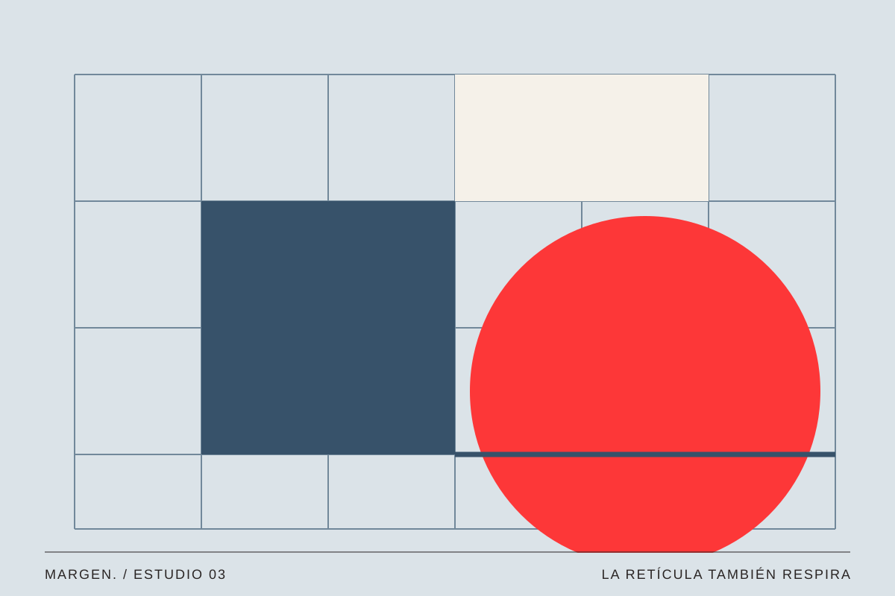
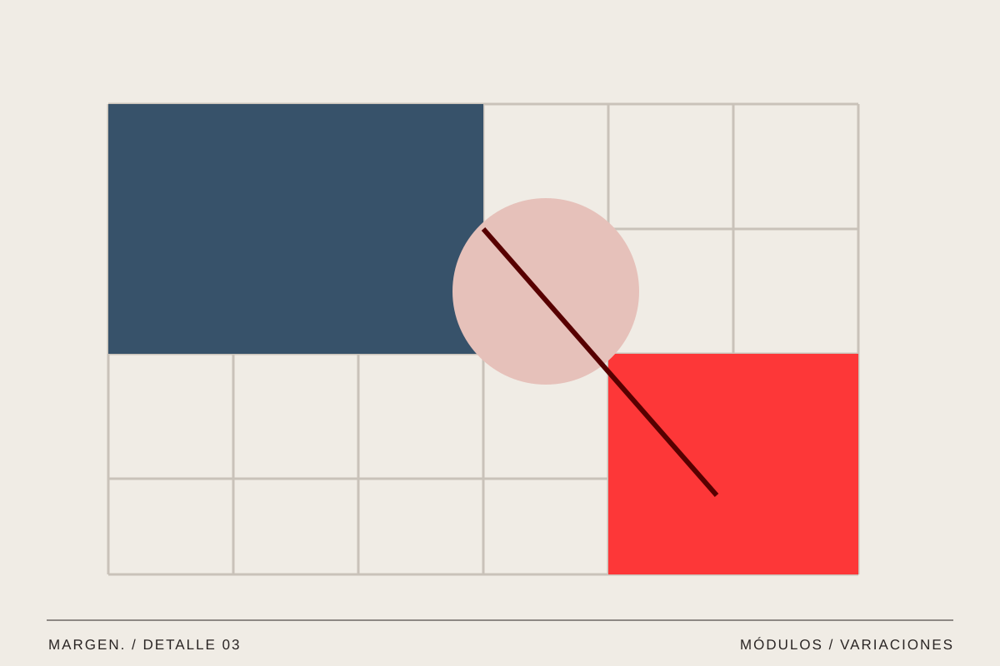

03 / Diseño / Vol. 001
Más allá de la cuadrícula
El orden también puede sorprender.
MARGEN. / Texto editorial ·

Una retícula puede pasar desapercibida y, aun así, sostener toda una página. Es la estructura que permite que elementos diferentes convivan sin perder su relación.
Construir relaciones
Las columnas no sirven únicamente para colocar textos. También ayudan a relacionar imágenes, titulares y espacios vacíos. Si varias piezas comparten una alineación, las percibimos como parte de un mismo sistema aunque sus tamaños sean distintos.
Podemos imaginar una página dividida en seis columnas. Una fotografía ocupa cuatro y el texto las dos restantes. Más abajo, tres imágenes ocupan dos columnas cada una. Cambia la composición, pero se mantiene una medida común que une las secciones.
La retícula no obliga a repetir siempre una misma distribución. Permite que las páginas compartan un lenguaje incluso cuando los contenidos son muy diferentes. Una entrevista extensa quizá necesite una columna de lectura estable, mientras que un reportaje fotográfico puede abrirse con una imagen a sangre. Si los márgenes, las proporciones y algunos puntos de alineación se mantienen, el conjunto conserva una sensación de orden sin volverse monótono.

La retícula sostiene. La decisión le da ritmo.
Dejar un hueco
El espacio vacío también forma parte del diseño. Reservar una zona sin contenido puede dar protagonismo a una imagen o crear una pausa entre dos temas. No es necesario llenar cada celda de la retícula para demostrar que existe.
Una composición demasiado uniforme puede resultar previsible. Alternar un bloque amplio con otros más pequeños produce ritmo. La estructura sigue ahí, aunque no todos los elementos tengan las mismas dimensiones.
El espacio negativo tampoco es un lugar que haya quedado sin terminar. A veces es la decisión que permite comprender todas las demás. Al rodear una frase con aire, le damos tiempo y presencia. Al separar dos fotografías, invitamos a compararlas como piezas independientes. En cambio, cuando se colocan muy cerca, las leemos como parte de una secuencia. La distancia también construye significado, igual que el tamaño o el color.

Salir sin perder el camino
Un titular puede cruzar dos columnas o una imagen asomarse al margen. Esas excepciones llaman la atención porque existe un orden con el que compararlas. Si todo se sale, dejamos de percibir qué es especial.
En una web, esa estructura necesita adaptarse. Las tres columnas de una pantalla grande pueden convertirse en una sola en el móvil. La relación entre título, imagen y texto debe seguir siendo clara aunque cambie la distribución.
En diseño digital, una cuadrícula necesita ser flexible. Una composición que funciona con mucho ancho puede resultar incómoda si intenta conservar exactamente las mismas proporciones en una pantalla pequeña. Adaptar no es encoger todo: puede significar cambiar el orden, ajustar los espacios o elegir otro recorte de imagen. Lo fundamental es conservar la prioridad de la información, de modo que la experiencia siga teniendo sentido aunque desaparezcan algunas columnas.
Un sistema que permite probar
Trabajar con una retícula resulta más interesante cuando la usamos como herramienta de experimentación. Podemos comenzar con una página aparentemente sencilla, duplicarla y probar tres variaciones: una imagen dominante, un título desplazado y una zona en blanco mucho mayor. Al comparar los resultados, aparecen decisiones que quizá no habríamos descubierto desde cero.
El orden no tiene por qué imponerse al contenido. Su función es sostenerlo y permitir que cada pieza encuentre la forma adecuada de ser contada.